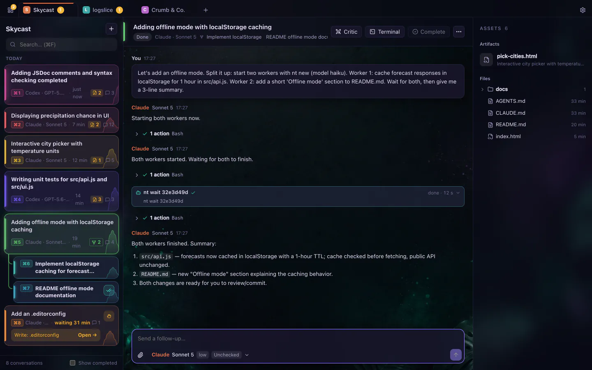
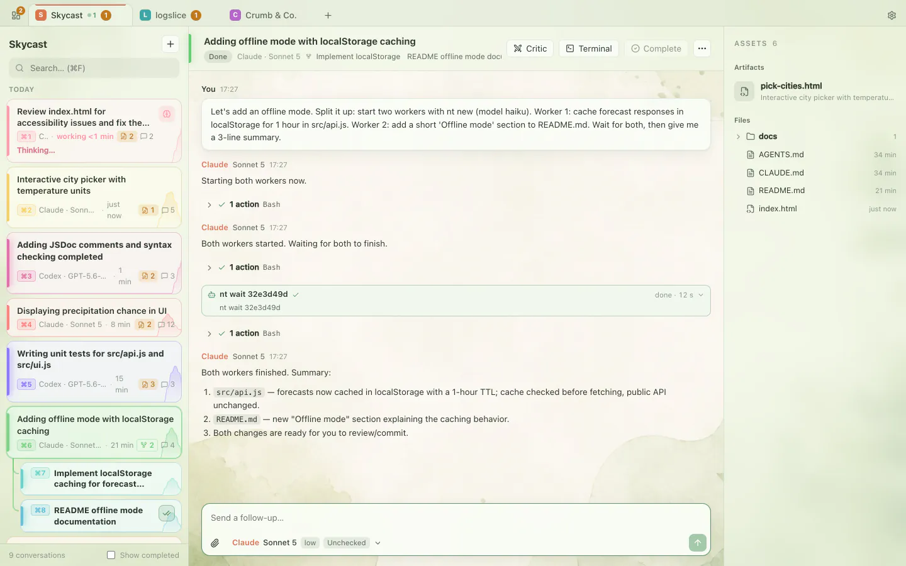
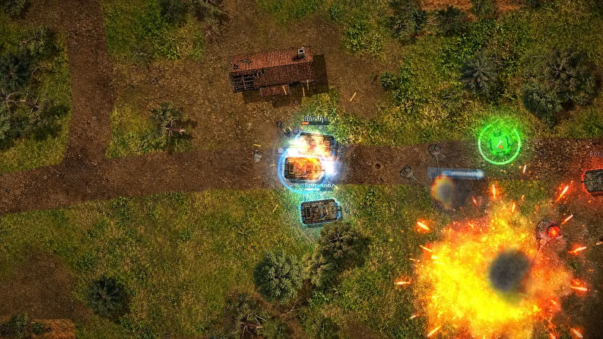
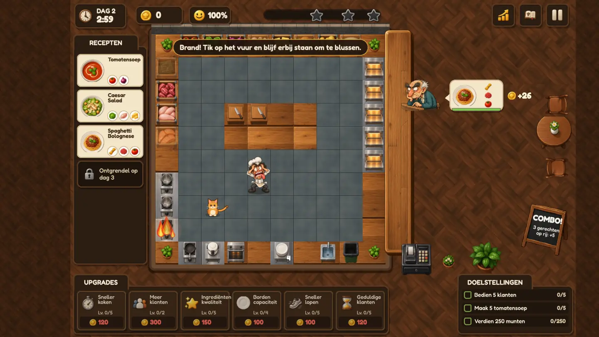
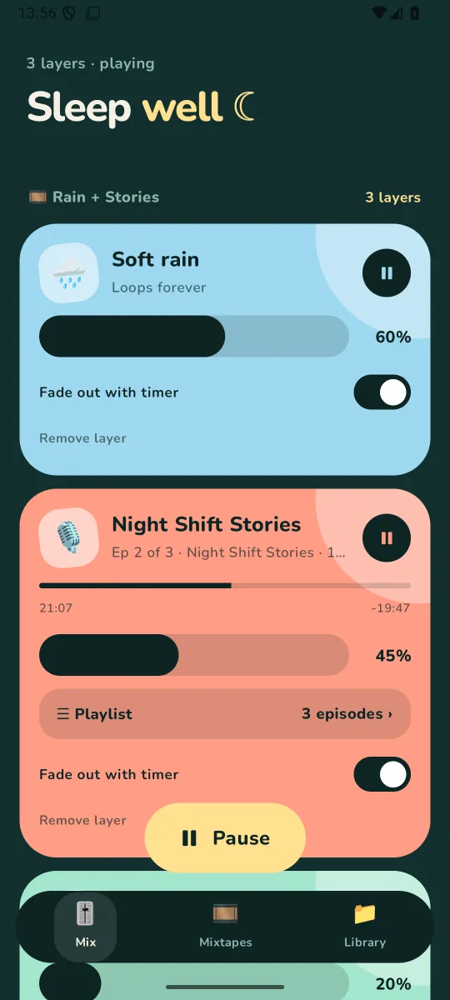

Independent maker studio
Software that feels like the future we were promised.
NERDY builds tools, interfaces and experiments. Engineered seriously, played with on purpose.
A peek into the workshop.


01Mier
Direct Claude and Codex from one app: conversations as chats, workers you can follow, and the real terminal one click away.
View project
02Tankeretank
A top-down tank game for the family. Blue against red, online or against bots, in a landscape you can shoot to pieces.
View project
03You Cook
A cooking game with one chef, hungry customers, fires, breakdowns and a kitchen cat in the way.
View project
04Drift
A sleep sounds app that mixes rain with podcast episodes, fades out on a timer and picks up where you drifted off.
View projectBuild the tools you wish existed. Then make them a joy to use.
Useful first
Every project starts from a real problem in day-to-day work, not from a trend.
Serious underneath
Solid engineering and careful maintenance. Tools you rely on should be boring in the right places.
Playful on the surface
Interfaces with a bit of wonder. The fun lives in the details and never gets in your way.